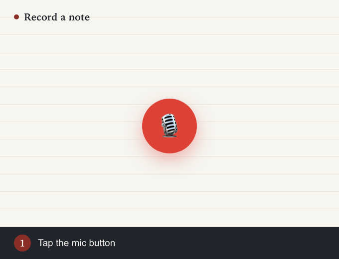
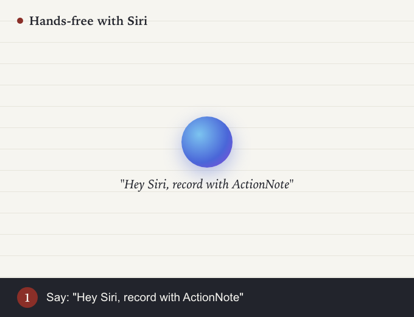
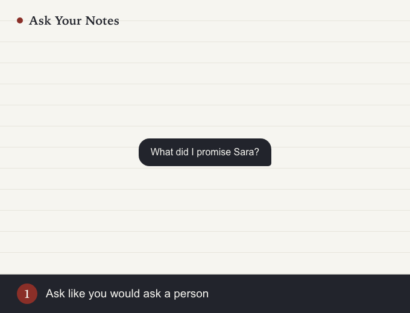
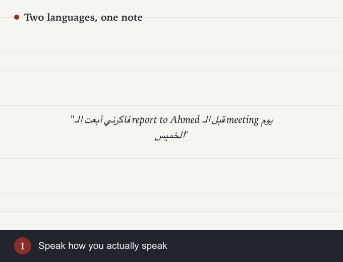
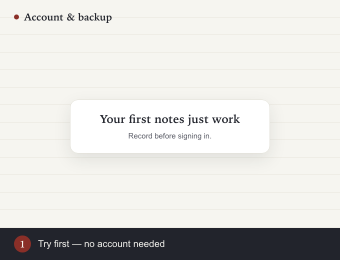

🎙️ Record your first note
The core loop: talk messy, get a clean note with a title, summary, key points, and real tasks.

Tap the mic button — the big one at the bottom, or the "Capture an idea" card on Home.
Say it how it comes out. Rambling is the point: "call mom tomorrow… we're out of coffee… Sara's birthday is Friday, cake before Thursday."
Tap stop, then Save. A few seconds later the note opens itself: summary, key points, and tasks with the dates you said out loud.
Tip: lock the screen or switch apps mid-thought — the recording keeps going, and you'll get a notification when the note is ready.
🗣️ Hands-free with Siri
Capture without touching the phone — even from your pocket, even locked.

Say "Hey Siri, record with ActionNote." The app opens straight into a running recording.
Talk. As long as you like.
Say "Hey Siri, stop recording in ActionNote." It saves and organizes — this works from the lock screen too.
Tip: driving? Mount the phone, keep it unlocked with navigation on, and the two phrases make the whole capture hands-free.
📲 Import WhatsApp voice notes
The 7-minute voice note from your friend, readable in 20 seconds.
Long-press the voice note in WhatsApp (or any audio file, anywhere) and choose Forward → Share.
Pick ActionNote in the share sheet.
Open ActionNote. The note is processed like your own recording — summary, points, tasks.
Tip: works with voice memos, meeting recordings, and audio files from anywhere the share sheet exists.
💬 Ask Your Notes
Everything you've ever captured becomes something you can question.

Ask like you'd ask a person: "What did I promise Sara?" · "When is the dentist?" · "What was my idea about the trip?"
Check the source. Every answer cites the note it came from — tap it to read the original.
Tip: you can also ask by voice — "Hey Siri, ask ActionNote what I promised Sara" — and hear the answer read back.
✅ Tasks & reminders
Dates you say out loud become reminders that actually ring.
Say the deadline while recording: "send the report before Thursday" — the task arrives with Thursday attached.
Tap the bell on any task to add or change its reminder.
Promote key points: tap the + next to any key point to turn it into a task, or "Convert all to to-do list".
Tip: the Tasks tab collects every open task across all notes — one list, all your notes.
🌍 Two languages, one note
Speak how you actually speak — Arabic and English in the same sentence is the reason this app exists.

Just record. Mix languages mid-sentence; the note comes back clean in the language you spoke.
Want everything in your language? Settings → turn on Organize in my language.
Flip the note: on cross-language notes, tap the ⇄ chip next to "Ready" to switch between your language and the spoken one.
Tip: the transcript always keeps exactly what you said, in the languages you said it.
📤 Share & export
Clean formatted text that pastes nicely anywhere — free for everyone.
Open a note → share icon. You get formatted text with the title, summary, and tasks.
Paste anywhere: Notion, Todoist, email, WhatsApp — it lands clean.
Sharing to another ActionNote user? The share carries the note itself — they tap once to import it.
Tip: exporting is free forever — your notes are yours, subscribed or not.
☁️ Account & backup
Notes live on your iPhone and your own iCloud — there is no ActionNote database.

Try first, sign in later. Your first notes work with no account at all.
When you sign in, the notes you made as a guest come with you automatically.
iCloud backup is on by default: reinstall the app, sign in, and everything returns.
Tip: cancel any subscription anytime — your notes stay on your device and iCloud. You just go back to the free monthly limits.
⌚ Apple Watch ARRIVING IN v1.2
Record on your wrist — even offline on a run. The phone does the thinking.
Open ActionNote on the watch. It starts recording immediately — that's the whole UI.
Tap stop. "Saved — will sync when your iPhone is nearby."
That's it. The note appears on your phone, processed like any other — even if the phone was at home the whole time.
Tip: no pairing, no setup, no account on the watch. If it's paired to your iPhone, it just works.
☀️ Morning Brief ARRIVING IN v1.2
Your tasks, deadlines, and meetings in one notification, every morning. Free forever.
It's on automatically — arrives at 8:30 by default.
Change the time: Settings → Morning Brief.
Add your calendar (optional): toggle calendar context and the Brief includes today's meetings — read on-device, never uploaded.
Tip: quiet days stay quiet — no tasks and no meetings means a gentler brief, not guilt.
🔗 Share a note as a link ARRIVING IN v1.2
Send a note to anyone — they read it in the browser, no app needed.
Share a note — the share text now carries a getactionnote.com link.
They open it anywhere. Clean web page: title, summary, tasks.
Privacy stays intact: the note travels inside the link itself — its content never touches a server, including ours.
Tip: if they have ActionNote installed, the same link imports the note straight into their app.